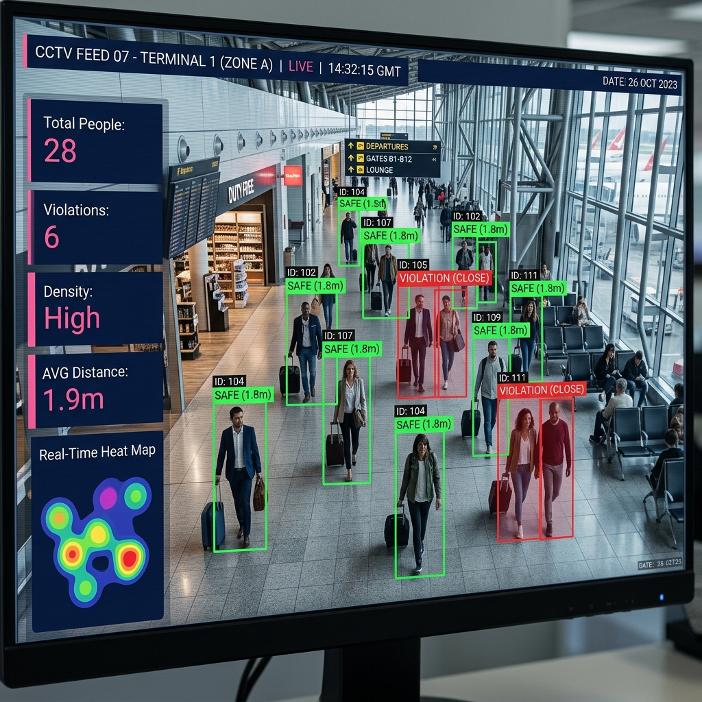

Facemask & Social Distancing Monitoring
Enforce health protocol at scale.
Enforces facemask and distancing compliance in controlled-access facilities and public venues during outbreak conditions.

What it does
The Facemask & Social Distancing module enforces public-health protocols in controlled-access facilities and public venues during disease-outbreak conditions — automatically detecting unmasked individuals and breaches of distancing rules and surfacing them for staff action.
It lets a single operator maintain compliance across spaces far larger than any manual monitoring team could cover, and can be enabled or stood down as public-health conditions require.
Key capabilities
Identifies unmasked individuals in controlled and public spaces.
Flags breaches of minimum-distance rules in queues and crowds.
One operator oversees large facilities and gathering spaces.
Enabled during outbreak conditions and stood down otherwise.
Maintains a timestamped record of compliance events.
Surfaces breaches for staff guidance rather than automatic penalty.
Capture → detect → act
Configure
Staff enable the health protocol and set mask / distancing rules per venue.
Detect
Live feeds are scanned for unmasked individuals and distancing breaches.
Notify
Breaches are surfaced to on-site staff for guidance and a compliance log.
At a glance
| Signals | Mask presence, inter-person distance |
| Mode | Toggle on / off by protocol |
| Scope | Controlled-access & public venues |
| Processing | On-premise real-time |
| Record | Timestamped compliance log |
| Posture | Advisory, staff-actioned |
Where it's deployed
- Hospitals & clinics. Maintain protocol in high-risk healthcare settings.
- Transport hubs. Monitor compliance across busy stations and terminals.
- Government offices. Enforce rules in controlled-access public buildings.
- Large venues. Oversee distancing at events during outbreak conditions.
Survey, integration, training & support — included
This module is delivered as part of the complete AMS Safe City service: ISD handles site survey, integration onto your existing cameras, multi-environment AI tuning, command-centre setup, operator onboarding, and ongoing maintenance — all processed on-premise within your own network.